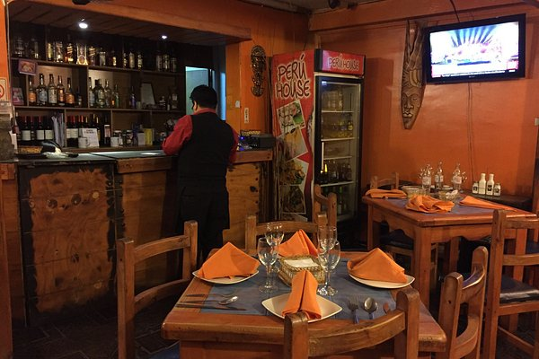
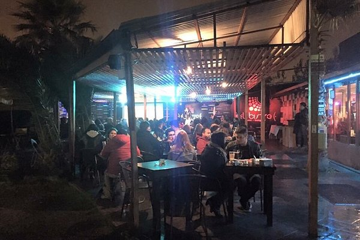

Nuestras sucursales:
Sucursal del centro de Santiago:
Como llegar: Llegas al centro y justo a los pies del gran edificio cafe claro nos encontramos listos para atenderte.
Telefono: +569 5555 5550
Correo: elaniquiladorcentro@mail.com
Sucursal Ñuñoa:
Como llegar: Camina por la calle y cuando veas el graffiti de una guitarra, estamos al lado.
Telefono: +569 5555 5551
Correo: elaniquiladornunoa@mail.com
Sucursal Maipú:
 